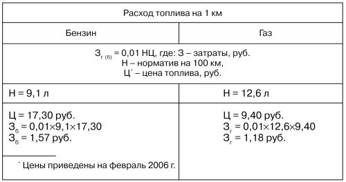

Опровержение доводов противников газового топлива.
У многих автомобилистов, да и у некоторых работников государственного общественного транспорта бытует мнение, что выбрасываемый в воздух газ особо опасен для здоровья. Но опасаться этого не стоит. Паровая фаза сжиженного газа менее токсична, чем пары бензина, а специфический его запах – это результат одозорации (добавления небольшого количества газообразного вещества с сильным запахом – этилмеркаптана).
Существует также мнение, что велика вероятность взрыва газового баллона. Автомобилист, прежде чем решиться перевести свой автомобиль на газовое топливо, обычно задумывается: не грозит ли этот переход высокой пожаро– и взрывоопасностью?
Опыт эксплуатации газобаллонных автомобилей, как у нас, так и за рубежом, показывает, что автомобили, работающие на газе, менее пожаро– и взрывоопасны, чем бензиновые. В любом случае газ или пары бензина могут взорваться только в смеси с воздухом при определенной концентрации в единице объема, что исключено, в связи с невозможностью присутствия воздуха в газовом баллоне.
В среде транспортников-консерваторов сформировалась своеобразная установка на неприятие газа. Они все еще мыслят старыми категориями, не могут преодолеть психологического барьера, да и решительности подчас не хватает. Сознание автомобильных консерваторов, образно говоря, насквозь пропитано парами бензина.
Попробуем аргументированно опровергнуть доводы противников применения газовых установок.
1. Неприятный запах в салоне. В местах соединения трубопроводов часто происходит утечка газа. Ежедневная проверка герметичности системы отнимает много времени и практически произвести полную проверку оборудования методом омыления очень трудно.
Утечка газа возможна, если не уделять должного внимания установленной на автомобиле системе. Но ведь и прочие энергетические системы требуют внимания. И если такое случилось – запах газа в салоне, а автомобилист сам не может его устранить, то всегда можно обратиться за помощью в специализированный пункт проверки.
Что же касается современных газобаллонных систем, изготовленных из высококачественных материалов и по авиационным технологиям (например, отечественные системы «САГА-6» и «САГА-7»), то они обеспечивают достаточно высокую надежность.
Запах газа может ощущаться только при заправке автомобиля на газораздаточной станции, да и то в момент отключения наконечника заправочного шланга. В автомобиле взрывоопасная концентрация смеси возникнуть не может. Осторожность надо проявлять на стоянках. Бесспорно, газ опасен, но если водитель почувствовал специфичный запах, то он должен остановить машину, закрутить вентили на баллоне и спокойно продолжать путь на бензине, а по прибытии на место ремонта устранить неисправность.
Утечку же бензина можно не почувствовать. А причиной его возгорания может стать подтекающая канистра.
Газ же позволяет отказаться от перевозки канистр с бензином, и этот фактор также говорит в пользу газобаллонного оборудования.
А вот владельцы хэтчбеков и универсалов вместо «съедающей» площадь канистры с бензином могут воспользоваться газовым баллоном тороидальной формы, который без труда устанавливается на место запаски.
2. Процесс горения в двигателе затянут из-за неполного сгорания газа. Снижаются динамические характеристики автомобиля. В карбюраторе при работе на газе поплавок из-за отсутствия бензина ударяется о дно камеры, и в нем может образоваться трещина, через которую при смене топлива в него проникает бензин. Да и сам карбюратор повреждается.
Мнение о неполном сгорании газа в цилиндрах двигателя ошибочно. Газовые топлива, используемые в автомобильных двигателях, имеют меньшие, чем жидкие топлива, скорости сгорания, но более широкие пределы воспламеняемости, поэтому этот незначительный недостаток легко компенсируют увеличением угла опережения зажигания.
Теперь о поплавке. О возможности появления в нем трещины. Да, это нежелательное явление иногда встречается на автомобилях «Волга», но его возникновение можно легко предупредить, поместив на дно поплавковой камеры пластинку сепаратора от старого аккумулятора, вырезанную по его (дна) конфигурации. Поплавки же карбюраторов «Жигулей» и иномарок не разрушаются, и необходимость в подобной защите поплавка отпадает.
Случаи разрушения карбюратора крайне редки, о чем свидетельствует практика. Раз в месяц рекомендуется смазывать WD-40 в блоке дроссельных заслонок оси, так как при работе на газе эти оси не омываются бензином. Если их не смазывать, то они быстрее изнашиваются. Сейчас на многих модификациях карбюраторов оси дроссельных заслонок устанавливают на подшипниках скольжения, которые не требуют смазки. Для промывки каналов карбюратора пускать и прогревать двигатель следует на бензине.
В общем, как сказал классик: «Есть многое на свете, друг Гораций, что и не снилось нашим мудрецам» При ремонте «газового» двигателя не бывает лопнувших поршневых колец и перемычек. Октановое число 95–110 дает возможность избежать детонации даже на двигателях со степенью сжатия 10–12. Однако двигатели отечественных машин имеют степень сжатия только 8,2–9,5, из-за чего температура сгорания газовоздушной смеси ниже, чем бензовоздушной. К тому же в двигателе, работающем на газе, не происходит дополнительного охлаждения деталей в камере сгорания от испарения капелек бензина. В результате повышается теплонапряженность выпускных клапанов и их седел. Отсюда следует, что некоторое увеличение (на 3–5°) угла опережения зажигания будет весьма оправдано, только придется чаще проверять его. Не лишним будет увеличить на 0,05–0,07 тепловые зазоры клапанов.
Расход газа, на 12 % превышающий расход бензина, – результат сгорания при низкой температуре и недостаточном наполнении цилиндров рабочей смесью. При этом мощность двигателя немного снижается, хотя скорость движения остается практически без изменений.
Но так ли уж важны вам высокие скорости? Ведь далеко не все дороги, избороздившие просторы нашей страны, дают возможность автомобилю разогнаться до больших скоростей. К сожалению, качество российских дорог все еще оставляет желать лучшего.
3. У автомобилей, оснащенных газобаллонным оборудованием, большой расход топлива. Сегодня много «прожорливых» автомобилей. Это особенно чувствуется сейчас, в условиях сильного роста цен на бензин. Ездить на автомобиле стало накладно. Но есть выход из положения – перевести автомобиль на газ. Даже при расходе, превышающем расход жидкого топлива на 12 %, финансовые затраты на использование газового топлива остаются меньше. Ниже приведен расчет затрат на топливо в городе при езде со скоростью 30–50 км/ч.

Экономия стоимости топлива Э на 1 км пути:
Э = Зб – Зг = 1,57 – 1,18 = 0,39 руб.
Сумма экономии на 100 км:
0,39 х 100 = 39 руб.
При годовом пробеге 17 000 км:
17 000: 100 х 39 = 6630 руб.
При таких показателях стоимость газового оборудования окупается в пределах 25–30 тыс. км пробега.
Этот ряд преимуществ использования сжиженного газа в качестве топлива можно продолжить, отметив, в частности, величайшую косвенную заслугу газа – он сберегает более дорогое жидкое топливо.
Вряд ли можно оспорить такой плюс газификации для общественного автотранспорта, как экономия жидкого топлива. Экономия бензина особенно существенна там, где велик его расход. У грузовиков и автобусов, например, расход жидкого топлива в несколько раз больше, чем у легковых автомобилей. А потому так важно в целях экономии перевести эти виды транспорта на газ.
4. Уровень СО в отработавших газах у автомобилей с газобаллонным оборудованием выше, чем у автомобилей, работающих на бензине.
В действительности же при работе автомобиля на газовом топливе содержание в отработавших газах продуктов сгорания (СО и CH) заметно уменьшается, и, благодаря более низкой температуре рабочего цикла, несколько уменьшается и содержание NOx.
Содержание вредных веществ в отработавших газах автомобиля, работающего на газовом топливе, меньше, чем на бензиновом: CO – в 2–4 раза, NOx в 1,2–2,0 раза и CH – в 1,1–1,4 раза.
Таким образом, использование на автомобилях газового топлива обеспечивает выполнение существующих и перспективных международных норм токсичности (Евро-2, Евро-3 и Евро-4).
Взвесив все «ЗА» и «ПРОТИВ», можно заключить, что улучшить создавшееся положение в определенной степени помогает перевод автомобиля на газовое топливо.